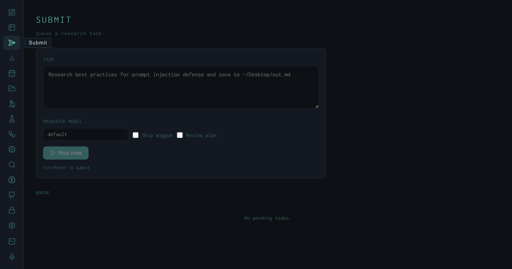

The Submit View: Queuing Tasks and Watching the Pipeline Execute in Real Time
A task form, a live WebSocket event feed, an optional plan gate, expandable chain-of-thought panels, and a result card — the full lifecycle of a harness research run from a single panel.
Most interaction with the harness happens from the CLI: type a task, the pipeline runs, a Markdown file lands on the desktop. The Submit view wraps that same interaction inside the dashboard — with the addition of a live event feed that surfaces every internal signal the pipeline emits as it works: memory hits, planned queries, search rounds, synthesis checkpoints, and wiggum scores. The queue and active-runs tables below the form extend this into multi-task scheduling without leaving the browser.

The Submit view at rest: task textarea with placeholder, producer model override field, two option checkboxes, and the queue showing no pending items.
The Task Form
The form is intentionally minimal. The Task textarea accepts exactly what the CLI accepts: a natural-language task string, optionally prefixed with skill flags like /deep or /cite. The placeholder Research best practices for prompt injection defense and save to ~/Desktop/out.md shows the expected format — free text with an output path.
Three options sit below the textarea:
HARNESS_PRODUCER_MODEL (currently qwen3.6-35b). Useful for A/B comparisons between model checkpoints without touching the config file.
Ctrl+Enter submits immediately from inside the textarea. The Run now button calls POST /api/queue, receives an item_id, and opens a WebSocket connection to /ws/runs — the live event feed appears without a page reload.
The Live Event Feed
Once a task is submitted, the event feed replaces the empty space below the form. A pulsing dot and "Running" label stay visible until the pipeline finishes. Each pipeline signal is rendered as a typed card:
best_practices, research, lit-review, etc.), complexity badge (simple / complex / exhaustive), and the list of search queries the planner generated. Optional notes field for planner reasoning.
8.30), round number, and a proportional bar — green for pass, red for fail. If Wiggum runs multiple revision rounds, a card appears for each one.
progress (cyan), finding (amber), blocker (red), done (green). Each card shows the sub-agent index and message type alongside the content.
Raw log lines that don't parse into a typed event go into a scrolling <pre> block below the cards, auto-scrolled to the bottom as new lines arrive.
The thinking cards are the most practically useful part of the feed for debugging. When a run scores poorly, the eval thinking trace often contains the evaluator's per-dimension reasoning verbatim — you can read exactly which criterion drove the score down without hunting through log files.
The Plan Gate
When Review plan is checked, the pipeline pauses after planning and emits a plan_gate event instead of proceeding to search. The dashboard intercepts this event and renders an ApprovePlanCard inline — a list of the planned queries with an Approve button. Clicking Approve unblocks the pipeline via a follow-up API call; the event feed then continues as normal.
This gate exists for high-stakes or expensive tasks where you want to verify the planner decomposed the problem correctly before burning search and synthesis tokens on a misframed set of queries. For routine use, leaving the checkbox unchecked means the pipeline runs end-to-end without interruption.
Active Runs and the Queue
Below the event feed, two sections give a view into concurrent execution. Active lists every run currently in flight across the whole harness — not just the one you just submitted. Each active run card shows a pulsing dot, the truncated run ID, the producer model, and the task string.
The Queue table shows all pending tasks — position, task string (truncated to 80 characters), status badge, queued-at timestamp, and a red square-icon cancel button for anything still in running or pending state. Tasks the harness is processing concurrently (when subtask_max_workers > 1) show running; tasks waiting behind them show pending.
The queue is useful when running batch experiments: submit a dozen variants, watch them drain through the active and queue tables, then switch to the Runs view to compare scores across all of them at once.
The Result Card
When the pipeline finishes and the completed run appears in the recent-runs list, a Result Card replaces the event feed. The card has a left border colored by outcome — green for PASS, red for FAIL — and shows the final score, run duration in seconds, and the output file path. Below the metadata the full synthesized output renders as formatted Markdown via MdView, so you can read the research report directly in the dashboard without opening the file.
No-wiggum fast path
Skip wiggum drops synthesis-only runs to roughly half the wall-clock time. Score and pass/fail fields in the result card are blank; everything else (output path, Markdown preview) works the same.
Model override persistence
The producer model field is not saved between submissions. Each task is independent — useful for running the same task string against two model checkpoints in sequence without touching the global config.
Ctrl+Enter shortcut
Submit fires from inside the textarea without moving to the button. This matters in practice: during active experimentation, the keyboard loop is task text → Ctrl+Enter → read result → edit task → repeat.
WebSocket streaming
The event stream uses a WebSocket at /ws/runs, not SSE. The server tails runs.jsonl every second and pushes new records as JSON. Multiple dashboard tabs each get their own connection; the broadcast() helper in ws.py fans out to all connected clients.
The Submit view is the fastest path from a research question to a scored output inside the harness. The Runs view then holds the permanent record; the Submit view is designed to be transient — write a task, watch it run, read the result, write the next one.